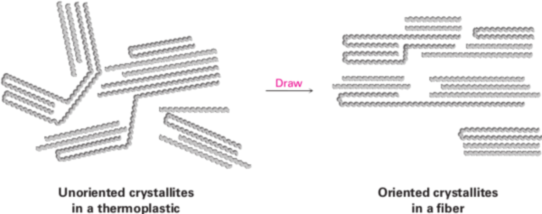

Polimeri
I polimeri (da πολύς, molto e μέρος parte) sono macromolecole formate dall'unione di piccole unità molecolari, denominate monomeri, legate covalentemente. La reazione di formazione di un polimero, a partire dal monomero, si dice reazione di polimerizzazione.
Omopolimero–le unità strutturali che costituiscono le macromolecole sono tutteuguali
Copolimero–ottenuti per polimerizzazione contemporanea di due (o più) monomeri diversi
La cellulosa e la gomma naturale sono esempi di polimeri naturali mentre il polietilene (PE), il polipropilene isotattico (iPP) e il polietilene tetraftalato (PET) sono esempi di polimeri sintetici.
Polymers have very long-chain molecules that are formed by covalent bonding along the backbone chain. The long chains are held together either by secondary bonding forces — such as van der Waals and hydrogen bonds — or primary covalent bonding forces through crosslinks between chains.
Most solid substances - metals, solids, and minerals - exist in a purely crystalline form, i.e. the atoms or ions of which they are composed are arranged in some regular geometric pattern. This is generally possible because the atoms (or ions) are small and very easily manouevrable. With polymers, however, we are dealing with very large molecules which entangle with each other and are consequently much less manouevrable. As a result, only a limited degree of crystalline arrangemente is possible with most polymers as they cool, and only restricted regions occur in which linear molecule chains can arrange themselves in an odered pattern. The ordered regions are called crystallites. Thus in a solid state, polymers consist both crystalline and amorphous regions. Highly crystalline polymers contain up to 90% crystalline regions, whilst others are almost completely amorphous. Polymers with side branches, or bulky group in the chains, are less likely to be crystalline tha linear chain polymers since the branches o bulky bits get in the way of orderly packing of the polymer. For example, polythene in its linear form chan show up 95% crystallinity, whereas in its branched form no more than 60% cristallinity is possible. The term high density polyethylene is used for the polyethylene with crystallinity of the order of 95% with low density being used for the polyethylene of about 50%. The high density form has a density of about 950 kg/m3, the low density form about 920 kg/m3. The higher density occurs because crystallinity allows the polymer chains to be more closely packed.
Ultrahigh molecular weight polyethylene chains can have 500,000 carbon atoms along their length.
The major difference between small and large organic molecules is in their physical properties. For instance, their large size means that polymers experience substantially larger van der Waals forces than do small molecules (Section 2.12). But because van der Waals forces operate only at close distances, they are strongest in polymers like high-density polyethylene, in which chains can pack together closely in a regular way. Many polymers, in fact, have regions that are essentially crystalline. These regions, called crystallites, consist of highly ordered portions in which the zigzag polymer chains are held together by van der Waals forces. Fig 1
As you might expect, polymer crystallinity is strongly affected by the steric requirements of substituent groups on the chains. Linear polyethylene is highly crystalline, but poly(methyl methacrylate) is noncrystalline because the chains can’t pack closely together in a regular way. Polymers with a high degree of crystallinity are generally hard and durable. When heated, the crystalline regions melt at the melt transition temperature, Tm, to give an amorphous material. Noncrystalline, amorphous polymers like poly(methyl methacrylate), sold under the trade name Plexiglas, have little or no long-range ordering among chains but can nevertheless be very hard at room temperature. When heated, the hard amorphous polymer becomes soft and flexible at a point called the glass transition temperature, Tg. Much of the art in polymer synthesis lies in finding methods for controlling the degree of crystallinity and the glass transition temperature, thereby imparting useful properties to the polymer.
In general, polymers can be divided into four major categories, depending on their physical behavior:
thermoplastics
fibers
elastomers
thermosetting resins.
Thermoplastic
Thermoplastics are the polymers most people think of when the word plastic is mentioned. They are hard at room temperature but soften and eventually melt as they are heated. At low temperatures there is very little motion of the molecules and the polymer is glasslike and brittle. As the temperature of the polymer is raised, it passes through its glass transition temperature (Tg). Above Tg, more motion of the chains is possible and the polymer is a rubbery solid. Eventually, the polymer passes through its crystalline meltring point (Tm) and melts to form a viscous liquid. Both Tg and Tm increase as the crystallinity of the polymer increases and as the strnght of the intermolecular forces between the polymer chains increases. The total intermolecular force increases as the lenght of the polymer increases. Because thermoplastics have little or no cross-linking, the individual chains can slip past one another in the melt. Some thermoplastic polymers, such as poly(methyl methacrylate) and polystyrene, are amorphous and non crystalline; others, such as polyethylene and nylon, are partially crystalline. Among the better-known thermoplastics is poly(ethylene terephthalate), or PET, used for making plastic soft-drink bottles.
As you might expect, polymer crystallinity is strongly affected by the steric requirements of substituent groups on the chains. Linear polyethylene is highly crystalline, but poly(methyl methacrylate) is noncrystalline because the chains can’t pack closely together in a regular way. Polymers with a high degree of crystallinity are generally hard and durable. When heated, the crystalline regions melt at the melt transition temperature, Tm, to give an amorphous material. Noncrystalline, amorphous polymers like poly(methyl methacrylate), sold under the trade name Plexiglas, have little or no long-range ordering among chains but can nevertheless be very hard at room temperature. When heated, the hard amorphous polymer becomes soft and flexible at a point called the glass transition temperature, Tg. Much of the art in polymer synthesis lies in finding methods for controlling the degree of crystallinity and the glass transi tion temperature, thereby imparting useful properties to the polymer.
Glass transition temperature
The liquid state is rarely observed in polymers. Most of the time, when the temperature is gradually increased of a polymeric compound, it exhibits rubber-like properties, or becomes more fluid with a viscous or gooey consistency.
Depending on their chemical structures, polymers may be either semi-crystalline or amorphous. Semi-crystalline polymers can undergo crystallization and melting transitions, whereas amorphous polymers do not. In polymers, crystallization and melting do not suggest solid-liquid phase transitions, as in the case of water or other molecular fluids. Instead, crystallization and melting refer to the phase transitions between two solid states (i.e., semi-crystalline and amorphous). Crystallization occurs above the glass transition temperature (Tg) and below the melting temperature (Tm).
At ambient temperatures, polymers may be either soft and flexible or hard, brittle and glassy. When a soft, flexible polymer is cooled to a sufficiently low temperature, it becomes hard and glassy. For example, a soft rubber ball when cooled in liquid air shatters to fragments if any attempt is made to bounce it. The temperature at which this soft-to-glasy change occurs is known as the glass transition temperature Tg.
| Polymer | Tg |
|---|---|
| Polythene (PE) | -120 |
| Natural rubber (NR) | -73 |
| Polyproylene (PP) | -27 |
| Polycarbonate (PC) | 147 |
Fibers
Fibers are thin threads produced by extruding a molten polymer through small holes in a die, or spinneret. The fibers are then cooled and drawn out, which orients the crystallite regions along the axis of the fiber and adds considerable tensile strength (Figure 31.4). Nylon, Dacron, and polyethylene all have the semicrystalline structure necessary for drawing into oriented fibers
Elastomer
Elastomers are amorphous polymers that have the ability to stretch out and spring back to their original shapes. These polymers must have low Tg values and a small amount of cross-linking to prevent the chains from slipping over one another. In addition, the chains must have an irregular shape to prevent crystal lite formation. When stretched, the randomly coiled chains straighten out and orient along the direction of the pull. Van der Waals forces are too weak and too few to maintain this orientation, however, and the elastomer therefore reverts to its random coiled state when the stretching force is released.
Natural rubber (Section 14.6) is the most common example of an elastomer. Rubber has the long chains and occasional cross-links needed for elasticity, but its irregular geometry prevents close packing of the chains into crystallites. Gutta-percha, by contrast, is highly crystalline and is not an elastomer.
I polimeri reticolati (o resine) hanno molti legami trasversali che provocano la formazione di una struttura tridimensionale rigida e irregolare, come nelle resine fenolo-formaldeide o urea-formaldeide. Un campione di questo materiale consta praticamente di una unica gigantesca molecola; il riscaldamento non lo rende morbido perché l'ammorbidimento provoca la formazione di altri legami traversali e perciò il materiale diventa più duro. Per questo motivo questi materiali sono chiamati termoindurenti.
Thermosetting resins are polymers that become highly cross-linked and solidify into a hard, insoluble mass when heated. Bakelite, a thermosetting resin first produced in 1907, has been in commercial use longer than any other syn thetic polymer. It is widely used for molded parts, adhesives, coatings, and even high-temperature applications such as missile nose cones. Chemically, Bakelite is a phenolic resin, produced by reaction of phenol and formaldehyde. On heating, water is eliminated, many cross-links form, and the polymer sets into a rocklike mass. The cross-linking in Bakelite and other thermosetting resins is three-dimensional and is so extensive that we can’t really speak of polymer “chains.” A piece of Bakelite is essentially one large molecule.
Vulcanization
Vulcanization is a cross-linking reaction by sulfur that generates three-dimensional network structures in rubber and is the best-known process of giving rubber products greater stability. Vulcanization was discovered by Goodyear in 1839 before the development of the concept of macromolecules by H. Staudinger in the 1920s. Charles Goodyear discovered this process while looking for ways to improve the properties of rubber. He accidentally spilled a mixture of rubber and sulfur on a hot stove. To his surprise, the mixture became hard but flexible. He called the heating of rubber with sulfur vulcanization, after Vulcan, the Roman god of fire.
Since then, sulfur cross-linking reactions have been improved by successive innovations in accelerators, activators, retarders, and so on, to improve processing and mechanical properties. Almost all rubber products, such as pneumatic tyres for automobiles and airplanes, are still manufactured using the vulcanization process.
Heating rubber with sulfur causes cross-linking of the separate polymer chains through disulfide bonds, thereby hardening and stiffening the polymer. The exact degree of hardening can be varied, yielding material soft enough for automobile tires or hard enough for bowling balls (ebonite).
When the rubber is stretched, the chains straighten out in the direction of the pull. The cross-linking prevents rubber from being torn when it is stretched; moreover, the cross-links provide a reference framework for the material to return to when the stretching force is removed. The physical properties of rubber can be controlled by regulating the amount of sulfur used in vulcanization. Rubber made with 1%–3% sulfur is soft and stretchy and is used to make rubber bands. Rubber made with 3%–10% sulfur is more rigid and is used in the manufacture of tires.
Tacticity
Tacticity (from Greek τακτικός taktikos "of or relating to arrangement or order") is the relative stereochemistry of adjacent chiral centers within a macromolecule. The practical significance of tacticity rests on the effects on the physical properties of the polymer. The regularity of the macromolecular structure influences the degree to which it has rigid, crystalline long range order or flexible, amorphous long range disorder. Precise knowledge of tacticity of a polymer also helps understanding at what temperature a polymer melts, how soluble it is in a solvent and its mechanical properties.
Diads
Two adjacent structural units in a polymer molecule constitute a diad. If the diad consists of two identically oriented units, the diad is called a meso diad reflecting similar features as a meso compound. If the diad consists of units oriented in opposition, the diad is called a racemo diad as in a racemic compound.
Isotactic polymers
Isotactic polymers are composed of isotactic macromolecules (IUPAC definition). In isotactic macromolecules all the substituents are located on the same side of the macromolecular backbone. An isotactic macromolecule consists of 100% meso diads. Polypropylene formed by Ziegler–Natta catalysis is an isotactic polymer. Isotactic polymers are usually semicrystalline and often form a helix configuration.
Syndiotactic polymers
In syndiotactic or syntactic macromolecules the substituents have alternate positions along the chain. The macromolecule consists 100% of racemo diads. Syndiotactic polystyrene, made by metallocene catalysis polymerization, is crystalline with a melting point of 161 °C. Gutta percha is also an example for Syndiotactic polymer.
Atactic polymers
In atactic macromolecules the substituents are placed randomly along the chain. The percentage of meso diads is between 1 and 99%. With the aid of spectroscopic techniques such as NMR it is possible to pinpoint the composition of a polymer in terms of the percentages for each triad.
Polymers that are formed by free-radical mechanisms such as polyvinyl chloride are usually atactic. Due to their random nature atactic polymers are usually amorphous. In hemi isotactic macromolecules every other repeat unit has a random substituent.
Atactic polymers are technologically very important. A good example is polystyrene (PS). If a special catalyst is used in its synthesis it is possible to obtain the syndiotactic version of this polymer, but most industrial polystyrene produced is atactic. The two materials have very different properties because the irregular structure of the atactic version makes it impossible for the polymer chains to stack in a regular fashion. The result is that, whereas syndiotactic PS is a semicrystalline material, the more common atactic version cannot crystallize and forms a glass instead. This example is quite general in that many polymers of economic importance are atactic glass formers.